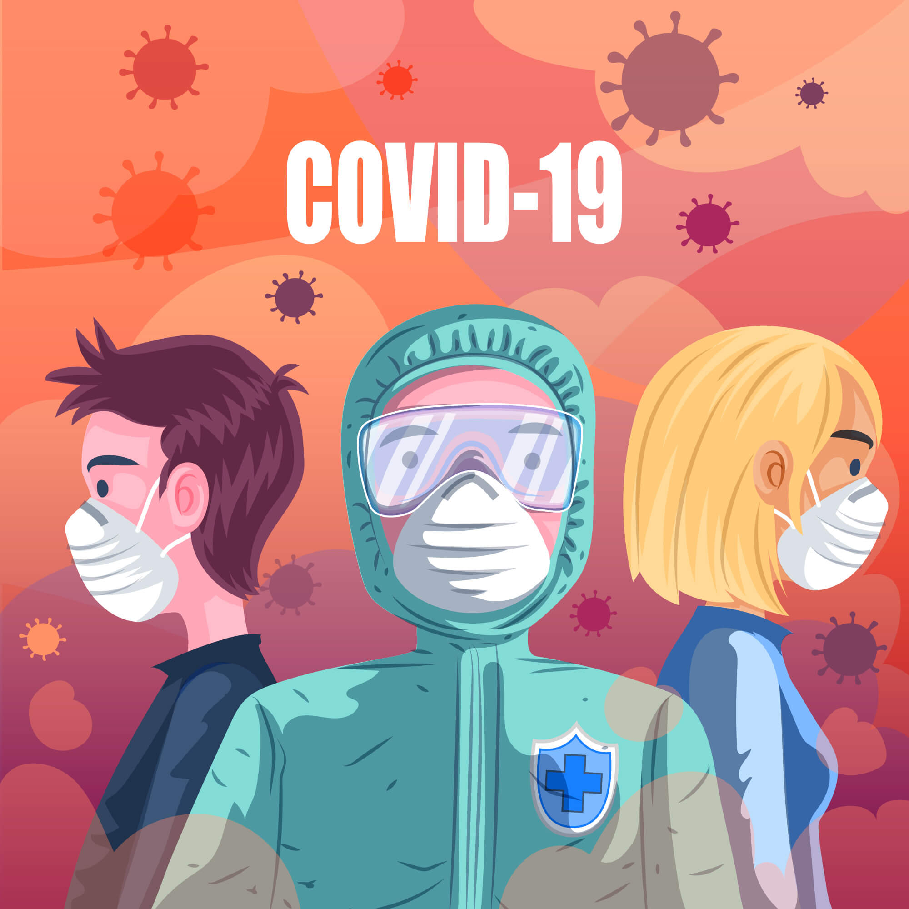

COVID-19
Severe acute respiratory syndrome coronavirus 2 (SARS-CoV-2) yang lebih dikenal dengan nama virus Corona adalah jenis baru dari coronavirus yang menular ke manusia. Walaupun lebih banyak menyerang lansia, virus ini sebenarnya bisa menyerang siapa saja, mulai dari bayi, anak-anak, hingga orang dewasa, termasuk ibu hamil dan ibu menyusui.
Infeksi virus Corona disebut COVID-19 (Corona Virus Disease 2019) dan pertama kali ditemukan di kota Wuhan, China pada akhir Desember 2019. Virus ini menular dengan sangat cepat dan telah menyebar ke hampir semua negara, termasuk Indonesia, hanya dalam waktu beberapa bulan.
Hal tersebut membuat beberapa negara menerapkan kebijakan untuk memberlakukan lockdown dalam rangka mencegah penyebaran virus Corona. Di Indonesia sendiri, diberlakukan kebijakan Pembatasan Sosial Berskala Besar (PSBB) untuk menekan penyebaran virus ini.
Coronavirus adalah kumpulan virus yang bisa menginfeksi sistem pernapasan. Pada banyak kasus, virus ini hanya menyebabkan infeksi pernapasan ringan, seperti flu. Namun, virus ini juga bisa menyebabkan infeksi pernapasan berat, seperti infeksi paru-paru (pneumonia).
Selain virus SARS-CoV-2 atau virus Corona, virus yang juga termasuk dalam kelompok ini adalah virus penyebab Severe Acute Respiratory Syndrome (SARS) dan virus penyebab Middle-East Respiratory Syndrome (MERS). Meski disebabkan oleh virus dari kelompok yang sama, yaitu coronavirus, COVID-19 memiliki beberapa perbedaan dengan SARS dan MERS, antara lain dalam hal kecepatan penyebaran dan keparahan gejala.
Tingkat Kematian Akibat Virus Corona (COVID-19)
Menurut data yang dirilis Gugus Tugas Percepatan Penanganan COVID-19 Republik Indonesia, jumlah kasus terkonfirmasi positif hingga 14 Mei 2020 adalah 16.006 orang dengan jumlah kematian 1043 orang.
Dari kedua angka ini dapat disimpulkan bahwa case fatality rate atau tingkat kematian yang disebabkan oleh COVID-19 di Indonesia adalah sekitar 6,5%. Case fatality rate adalah presentase jumlah kematian dari seluruh jumlah kasus positif COVID-19 yang sudah terkonfirmasi dan dilaporkan.
Merujuk pada data tersebut, tingkat kematian (case fatality rate) berdasarkan kelompok usia adalah sebagai berikut:
- 0–5 tahun: 2,6%
- 6-17 tahun: 0,67%
- 18–30 tahun: 1,17%
- 31–45 tahun: 2,39%
- 46-59 tahun: 8,9%
- >60 tahun: 17,3%
Dari seluruh penderita COVID-19 yang meninggal dunia, 0,6% berusia 0–5 tahun, 0,5% berusia 6–17 tahun, 10,7% berusia 31–45 tahun, 39,6% berusia 46–59 tahun, dan 45% berusia 60 tahun ke atas.
Sedangkan berdasarkan jenis kelamin, 64,9% penderita yang meninggal akibat COVID-19 adalah laki-laki dan 35,1% sisanya adalah perempuan.
Gejala Virus Corona (COVID-19)
Gejala awal infeksi virus Corona atau COVID-19 bisa menyerupai gejala flu, yaitu demam, pilek, batuk kering, sakit tenggorokan, dan sakit kepala. Setelah itu, gejala dapat hilang dan sembuh atau malah memberat. Penderita dengan gejala yang berat bisa mengalami demam tinggi, batuk berdahak bahkan berdarah, sesak napas, dan nyeri dada. Gejala-gejala tersebut muncul ketika tubuh bereaksi melawan virus Corona.
Secara umum, ada 3 gejala umum yang bisa menandakan seseorang terinfeksi virus Corona, yaitu:
- Demam (suhu tubuh di atas 38 derajat Celsius)
- Batuk kering
- Sesak napas
Ada beberapa gejala lain yang juga bisa muncul pada infeksi virus Corona meskipun lebih jarang, yaitu:
- Diare
- Sakit kepala
- Konjungtivitis
- Hilangnya kemampuan mengecap rasa atau mencium bau
- Ruam di kulit
Gejala-gejala COVID-19 ini umumnya muncul dalam waktu 2 hari sampai 2 minggu setelah penderita terpapar virus Corona.
Kapan harus ke dokter
Segera lakukan isolasi mandiri bila Anda mengalami gejala infeksi virus Corona (COVID-19) seperti yang telah disebutkan di atas, terutama jika dalam 2 minggu terakhir Anda berada di daerah yang memiliki kasus COVID-19 atau kontak dengan penderita COVID-19. Setelah itu, hubungi hotline COVID-19 di 119 Ext. 9 untuk mendapatkan pengarahan lebih lanjut.
Bila Anda mungkin terpapar virus Corona tapi tidak mengalami gejala apa pun, Anda tidak perlu memeriksakan diri ke rumah sakit, cukup tinggal di rumah selama 14 hari dan membatasi kontak dengan orang lain. Bila muncul gejala, baru lakukan isolasi mandiri dan tanyakan kepada dokter melalui telepon atau aplikasi mengenai tindakan apa yang perlu Anda lakukan dan obat apa yang perlu Anda konsumsi.
Bila Anda memerlukan pemeriksaan langsung oleh dokter, jangan langsung ke rumah sakit karena itu akan meningkatkan risiko Anda tertular atau menularkan virus Corona ke orang lain. Anda bisa membuat janji konsultasi dengan dokter di rumah sakit melalui aplikasi ALODOKTER agar bisa diarahkan ke dokter terdekat yang dapat membantu Anda.
ALODOKTER juga memiliki fitur untuk membantu Anda memeriksa risiko tertular virus Corona dengan lebih mudah. Untuk menggunakan fitur tersebut, silakan klik gambar di bawah ini.
Penyebab Virus Corona (COVID-19)
Infeksi virus Corona atau COVID-19 disebabkan oleh coronavirus, yaitu kelompok virus yang menginfeksi sistem pernapasan. Pada sebagian besar kasus, coronavirus hanya menyebabkan infeksi pernapasan ringan sampai sedang, seperti flu. Akan tetapi, virus ini juga bisa menyebabkan infeksi pernapasan berat, seperti pneumonia, Middle-East Respiratory Syndrome (MERS) dan Severe Acute Respiratory Syndrome (SARS).
Ada dugaan bahwa virus Corona awalnya ditularkan dari hewan ke manusia. Namun, kemudian diketahui bahwa virus Corona juga menular dari manusia ke manusia.
Seseorang dapat tertular COVID-19 melalui berbagai cara, yaitu:
- Tidak sengaja menghirup percikan ludah (droplet) yang keluar saat penderita COVID-19 batuk atau bersin
- Memegang mulut atau hidung tanpa mencuci tangan terlebih dulu setelah menyentuh benda yang terkena cipratan ludah penderita COVID-19
- Kontak jarak dekat dengan penderita COVID-19
Virus Corona dapat menginfeksi siapa saja, tetapi efeknya akan lebih berbahaya atau bahkan fatal bila terjadi pada orang lanjut usia, ibu hamil, orang yang memiliki penyakit tertent, perokok, atau orang yang daya tahan tubuhnya lemah, misalnya pada penderita kanker.
Karena mudah menular, virus Corona juga berisiko tinggi menginfeksi para tenaga medis yang merawat pasien COVID-19. Oleh karena itu, para tenaga medis dan orang-orang yang memiliki kontak dengan pasien COVID-19 perlu menggunakan pelindung diri (APD).
Diagnosis Virus Corona (COVID-19)
Untuk menentukan apakah pasien terinfeksi virus Corona, dokter akan menanyakan gejala yang dialami pasien dan apakah pasien baru saja bepergian atau tinggal di daerah yang memiliki kasus infeksi virus Corona sebelum gejala muncul. Dokter juga akan menanyakan apakah pasien ada kontak dengan orang yang menderita atau diduga menderita COVID-19.
Guna memastikan diagnosis COVID-19, dokter akan melakukan beberapa pemeriksaan berikut:
- Rapid test untuk mendeteksi antibodi (IgM dan IgG) yang diproduksi oleh tubuh untuk melawan virus Corona
- Swab test atau tes PCR polymerase chain reaction untuk mendeteksi virus Corona di dalam dahak
- CT scan atau Rontgen dada untuk mendeteksi infiltrat atau cairan di paru-paru
Hasil rapid test COVID-19 positif kemungkinan besar menunjukkan bahwa Anda memang sudah terinfeksi virus Corona, namun bisa juga berarti Anda terinfeksi kuman atau virus yang lain. Sebaliknya, hasil rapid test COVID-19 negatif belum tentu menandakan bahwa Anda mutlak terbebas dari virus Corona.
Pengobatan Virus Corona (COVID-19)
Infeksi virus Corona atau COVID-19 belum bisa diobati, tetapi ada beberapa langkah yang dapat dilakukan dokter untuk meredakan gejalanya dan mencegah penyebaran virus, yaitu:
- Merujuk penderita COVID-19 yang berat untuk menjalani perawatan dan karatina di rumah sakit rujukan
- Memberikan obat pereda demam dan nyeri yang aman dan sesuai kondisi penderita
- Menganjurkan penderita COVID-19 untuk melakukan isolasi mandiri dan istirahat yang cukup
- Menganjurkan penderita COVID-19 untuk banyak minum air putih untuk menjaga kadar cairan tubuh
Komplikasi Virus Corona (COVID-19)
Pada kasus yang parah, infeksi virus Corona bisa menyebabkan beberapa komplikasi berikut ini:
- infeksi paru-paru
- Infeksi sekunder pada organ lain
- Gagal ginjal
- Acute cardiac injury
- Acute respiratory distress syndrome
- Kematian